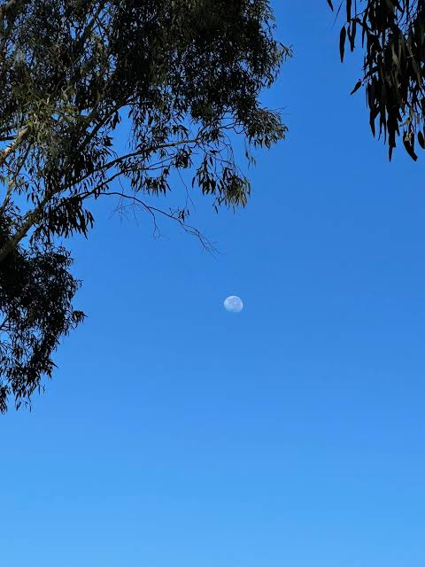

Jaabili(Moon) - the imperfect reprasentation of beauty

1. The moon is perhaps the best representation of a Manmathī.
While begrudgingly trotting towards the campus gate in the intense summer heat of 2024, I eyes glanced up at the evening sky as I muttered curses underneath my breath at the bitter realisation that going to the gate also meant walking back to hostel.. taking the same drab route.
As my eyes scanned the cerulean blue sky glancing at the scattered wisps drifting leisurely when the bright ball of intensity almost blinded me. A few frolicking birds flew around me when something caught me by surprise, and the moment I say it, it became the absolute cynosure of my eyes.
The pearl drop in the sky contrasted by the blue backdrop
Last updated